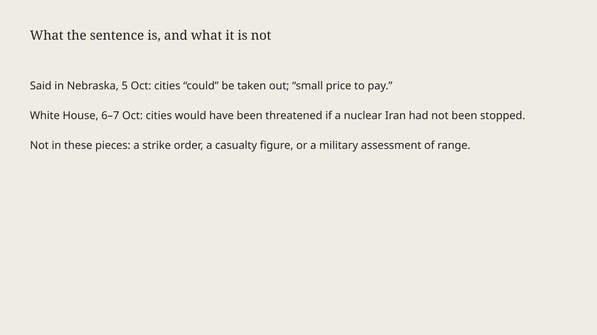

California · speech · 7 October 2026
The White House said a Trump line about Los Angeles and San Diego described a threat already stopped.

What is agreed across desks
On Monday 5 October 2026, President Donald Trump spoke in Nebraska about the Iran conflict. Reuters, the BBC and Snopes quote the same stretch. In Reuters’s wording: “It’s a small price to pay for keeping the world safe, for keeping our country safe. They could take out a city. Let ’em take out Los Angeles, let ’em take out San Diego. This is a very small price to pay, and it’s going to be over with very soon.” Snopes rates the attribution correct and prints a close variant that includes “They can take out a city” and “This is a very small price to pay and it’s going to be over with very soon.” The BBC’s rendering is “They can take out a city. Let them take out Los Angeles, let them take out San Diego,” attached to the “small price to pay” sentence about keeping the country safe.
The words were said. That is the checkable part. Snopes places them in an unscripted, tangential portion of a political rally speech. Reuters says sections of the audience cheered the lines about the two California cities. The BBC notes that Los Angeles and San Diego house major U.S. military installations, including Navy ports and Air Force bases. That is a fact about bases. It is not a fact about a weapon’s range.
On Tuesday the White House answered the criticism. Communications director Steven Cheung, also spelled Stephen in the BBC piece, wrote that the “media freakout” was “not rooted in reality” and that Trump “was clearly stating U.S. cities would have been threatened if a nuclear Iran hadn’t been stopped.” Reuters and the BBC both carry that gloss. Wednesday’s BBC headline is the defence, not a new speech.
What is only a quote
Governor Gavin Newsom, a Democrat, called the president “deranged and dangerous” and wrote that after National Guard and Marine deployments in California, Trump was “now saying our foreign enemies should ‘take out’ Los Angeles and San Diego.” That is a reading of the sentence as an invitation. Cheung’s post is a reading of the sentence as a counterfactual about a war he says was already fought. Both are claims about intent. Neither is a transcript footnote from the speaker that chooses one reading inside the rally audio these pieces quote.
“It’s going to be over with very soon” and “it’s essentially almost over with” are forecasts. Reuters prints them. A forecast is not a ceasefire text. “Nuclear Iran” in Cheung’s sentence is the White House’s premise. These articles do not attach an inspection report or a weapon count. Treating the premise as established would drop the complicity score of the outlet that did so. The pieces scored here mostly label it as Cheung’s line. That is why their C stays high even when the politics are hot.
Reuters says the remark drew a rebuke from California Democratic leaders and some fellow Republicans. It does not, in the extract used here, name those Republicans or quote them. “Some” is not a whip count.
How the sentence can be parsed
English allows “let them take out Los Angeles” to mean “suppose they do” and also to mean “I am willing that they do.” The following clause, “this is a very small price to pay,” attaches a cost judgment to whatever “this” points at. Listeners at the rally and officials in California heard the cost judgment as applying to the cities. The communications director says “this” points at the price of a war that, on his account, prevented the threat. A neutral report can print both parses and the cheer. It cannot pick the speaker’s private intent from the clause alone.
The military-base sentence from the BBC explains why the city names are not random. It does not show that a planner had designated those bases. No piece here produces an Iranian statement naming Los Angeles or San Diego on Monday. The actor in Trump’s sentence is “they.” The White House later specifies a nuclear Iran that, it says, was stopped.
What the story is not
It is not an evacuation order, a strike on either city, or a casualty list. It is not proof that the Iran war is over. The president’s “very soon” is a quote. It is not a finding about National Guard deployments beyond Newsom’s reference to earlier deployments; those deployments are a separate record. It is not a campaign-rally photograph. The hero is a 2019 city-hall exterior so the page does not crop a cheer or a grimace.

What would settle the parse
A full recording with the preceding minute, or a prepared text if one existed, would show what “this” and “small price” were attached to before the city names. Snopes already says the stretch was unscripted. Until a longer transcript is the source, the fair page quotes the clause, quotes Cheung, quotes Newsom, and stops.
Source articles and scores
| Outlet | Headline | T | N | C |
|---|---|---|---|---|
| Snopes | Did Trump say of Iran, 'Let 'em take out' LA and San Diego? | 96 | 0 | 100 |
| Reuters | Californians blast Trump remark that Iran could 'take out' Los Angeles, San Diego | 94 | 0 | 92 |
| BBC | White House defends Trump comment to let Iran 'take out' LA and San Diego | 90 | -4 | 85 |